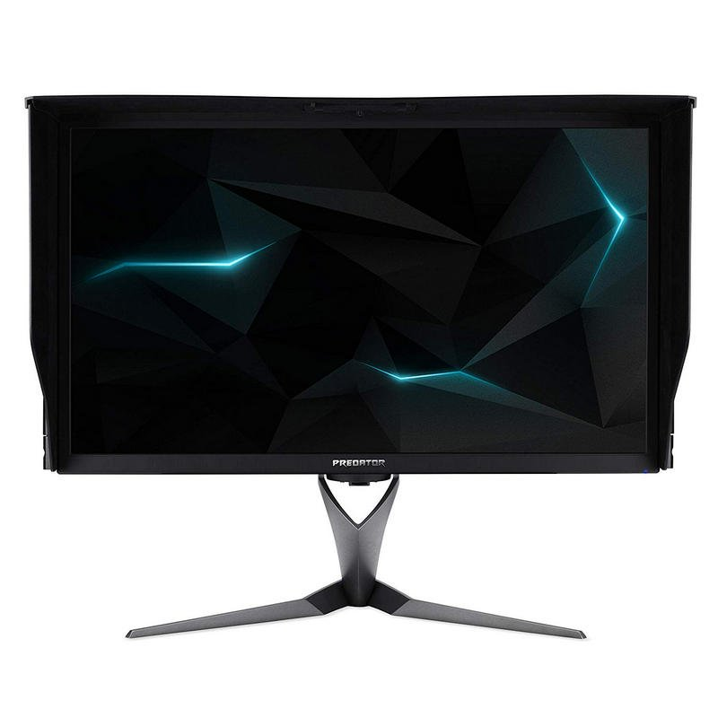

3º Monitor de la semana

1999€
Acer Predator X27P 27"
¡Pulveriza los límitdes con el montior Acer Predator X27P!. En el pasado, la resolución 4K a 144Hz no era
factible, ahora lo es. No solo rompas las limitaciones anteriores, ¡destrúyelas! Perfección perpetua se
esconde tras cada pantalla 4K, esperando su oportunidad para potenciar la calidad de imagen más allá de lo
imaginado.
Acer Predator X27P es uno de los monitores más espectaculares que puedes encontrar en el mercado. Gracias a su
resolución 3840x2160, te ofrece una calidad excelente que te proporcionará la mejor experiencia de juego
posible. Con un diseño elegante a la vez que funcional, resulta perfecto para aquellos gamers más exigentes o
aquellas personas que demandan perfección para su disfrute personal o trabajo.
 Email
Email  Facebook
Facebook  Linkedin
Linkedin  Twitter
Twitter  Instagram
Instagram